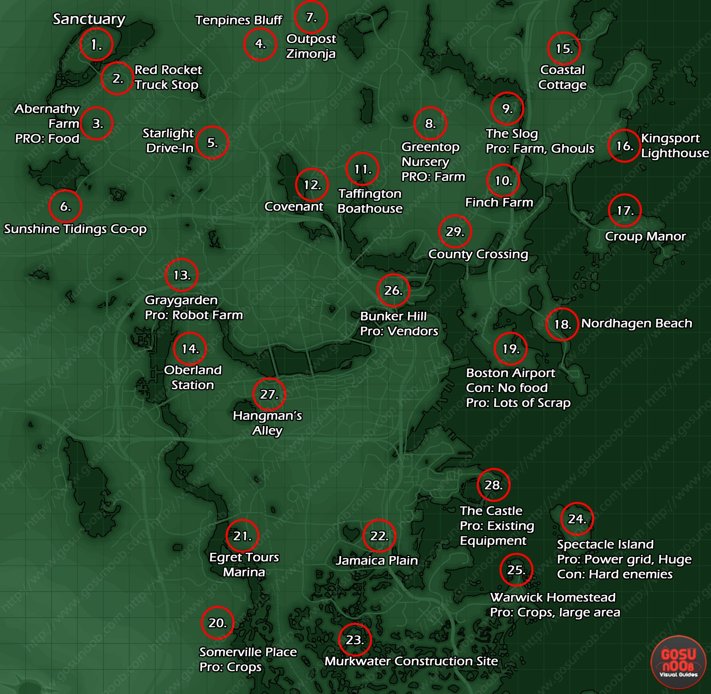

Explicació del mapa del Fallout, els llocs que pots visitar i la ruta que pots seguir per poder aconseguir tots els llibres de habilitats.
En el text es mostra la estructura que segueix el joc del fallout i els possibles llocs de interés per al jugador, però donat que és un poc complicat hem afegit una altra imatge que acompanya al seguiment.

Imatge complementària per poder entendre millor encara la ruta a seguir.
Podeu fer clic a la imatge per ampliar la imatge durant tota la informació enginyós. El mapa en si mateix va ser elaborat utilitzant captures de pantalla en el joc i una mica de màgia d'edició.
Es van utilitzar diversos recursos en línia per identificar els elements importants dispersos en el terreny erm. Això sí que és dedicació.
No serà el 100% exacte, però això no disminueix la seva utilitat per a tots els habitants que hi ha.
Si té el temps i energia per ajudar a la causa, l'arxiu del projecte va ser publicat perquè pugui ser millorat per la comunitat. Una cosa que no es destaquen sobre aquest mapa és com de massiva el món de Fallout 4 és.
Pot ser que no sembli molt gran al principi, especialment quan es compara amb altres títols del món obert, però aquest lloc és ple fins a la vora amb coses que fer i llocs per perdre.
¿Es va a utilitzar això en la seva escapada?
Es va a ajudar a millorar el mapa?
Versió explicativa de la ruta a seguir segons el número del lloc en la guia, si segueixes el recorregut en groc arribaràs als llocs més importants del joc i podràs recollir els objectes (llibres) que faran incrementar les teves habilitats de forma permanent.